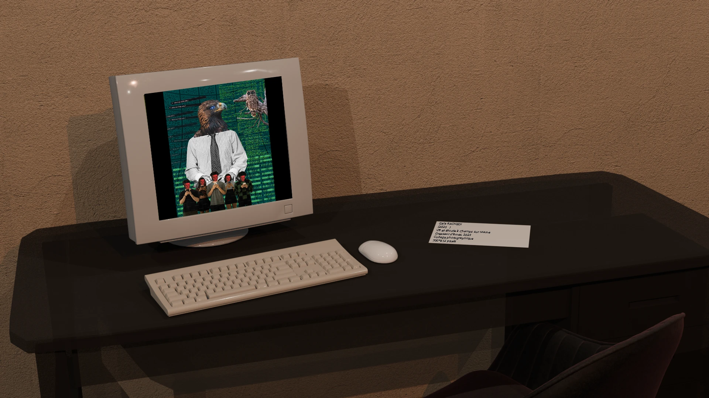

Un homme au buste d'aigle et de chouette, entouré de silhouettes au visage effacé par un écran, scrollant en continu.
Une critique de la dépendance aux écrans, d'après « Dresseur d'animaux » de Francis Picabia.
Un homme au buste d'aigle et de chouette, entouré de silhouettes au visage effacé par un écran, scrollant en continu.

Présentée en 2ᵉ année dans une salle d'exposition virtuelle construite en groupe — l'œuvre affichée sur un ordinateur d'époque, fiche explicative posée juste à côté.
Création et mise en scène de l'œuvre par moi. Salle d'exposition 3D réalisée par une camarade.